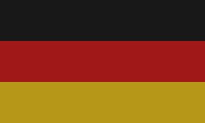
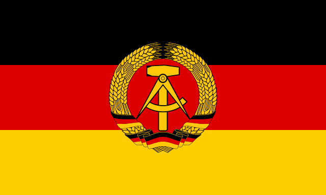
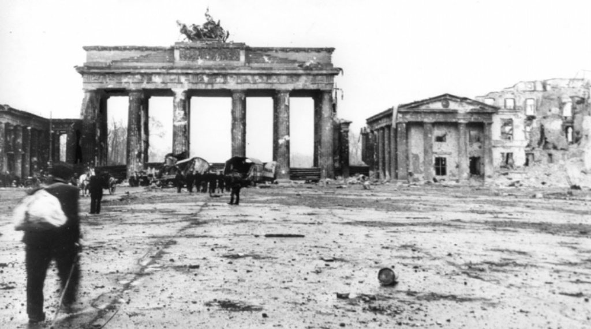

| Federal Republic of Germany (FRG)  | |
|---|---|
| Capital | Bonn |
| President | Theodor Heuss |
| Chancellor | Konrad Adenauer |
| Type of Government | Federal parliamentary republic |
| Population | 50.958 million |
| Land Area | 248,717 km² |
| Currency | Deutsche Mark |

| German Democratic Republic (GDR)  | |
|---|---|
| Capital | East Berlin |
| General Secretary | Walter Ulbricht |
| Head of State | Wilhelm Pieck |
| Head of Government | Otto Grotewohl |
| Type of Government | Unitary one-party socialist republic |
| Population | 18.388 million |
| Land Area | 108,333 km² |
| Currency | East German Mark |



Situation in Germany
The civilian population is suffering terribly from the ongoing war and everyone knows they have lost. The delay of the government and the bombing of the Americans destroy numerous houses, parks, streets and families. Some hang white flags outside, hoping to be spared from the fighting. The infrastructure also only exists in a few areas in Germany and food is only available in daily rations.
Situation outside Germany
The unified German army does not actually exist anymore, it consists of individual scattered troops that are just waiting for the end of the war and to go into captivity. Most of them try to flee to the west to get into American captivity, because this is much easier than the Soviet one. During the escape, many soldiers are shot by the generals who urge them to hold out. on May 8, 1945, the war was over, at least in Europe.
Read More